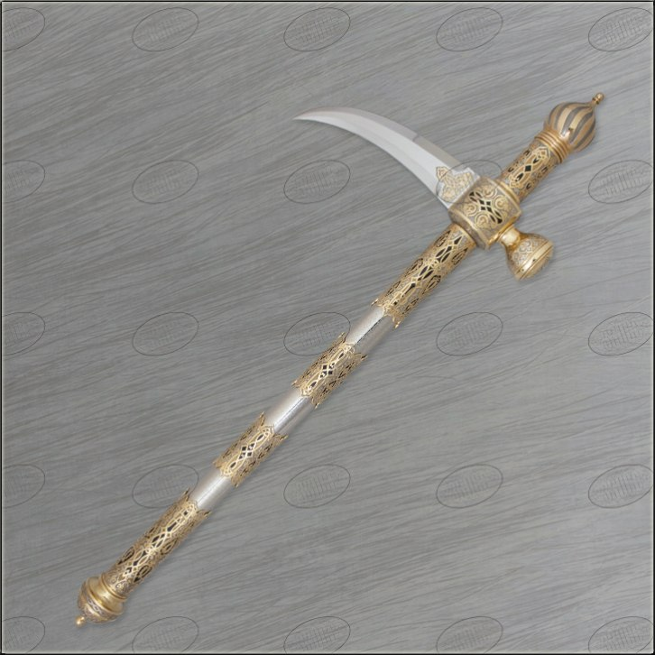

Kлевец

Клевец — дробяще-колющее холодное оружие. Боевая часть выполнена в форме узкого прямого или отогнутого к низу острия. Топорище прямое, длиной в руку (60 - 80 см). Общая масса 1 - 1,5 килограмма.
Клевец сочетал высокую пробивную способность (удар приходился на малую площадь) с удобством и небольшим весом. Таким оружием легко пробивали любые доспехи и щиты, но у него были существенные недостатки, в частности: застревал во всем, что пробивал; сложная техника парирования ударов.
Ввиду этих недостатков клевец использовался как дополнительное (к мечу) оружие хорошо вооруженных воинов или как вооружение ополченцев при отражении штурма крепостей. Воин, вооруженный клевцом, не мог обходиться без щита.
Главная страница.